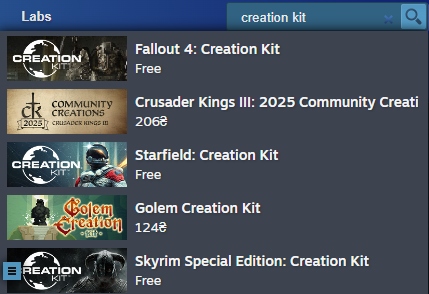
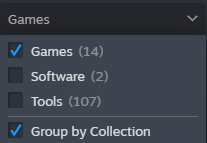
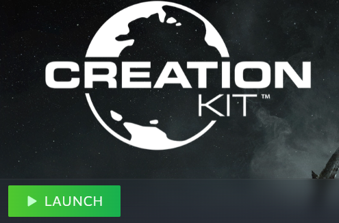
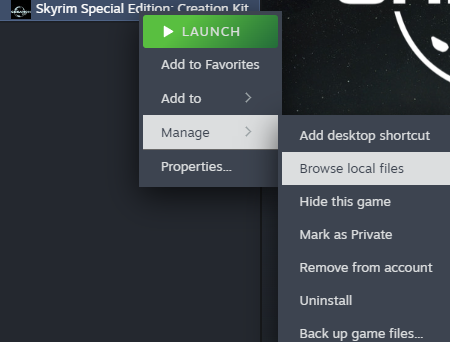

Loading...
Installing Creation Kit via Steam
In Steam Store, search for Creation Kit.
Or open this link directly: Skyrim Special Edition Creation Kit
Add it to your library and install.

Now go to your Steam Library. If you don't see Creation Kit there, make sure to check the Software option.

If you own Skyrim on Steam, you should be ready to go. Just launch it from Steam.

If you own Skyrim on another platform:
- Right-click on Creation Kit in your Library.
- Hover over Manage and select Browse local files.

When the Steam folder opens, copy and paste all contents inside your Skyrim game folder.
Now you can launch the Creation Kit via CreationKit.exe.
Make sure to create a shortcut and/or pin Creation Kit to your Taskbar for easy access.